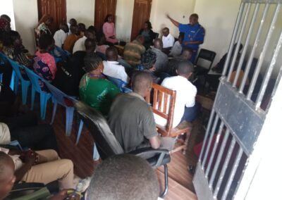

Championing Human Rights in Kimaeti: A Forum for Change

In the heart of Bungoma County, the Kimaeti Sub County community gathered for a significant forum, spearheaded by Commissioner Dr. Wamalwa. The event, set against the backdrop of the lush Kenyan landscape, sought to ignite a conversation on human rights and empower the local community with the knowledge and tools to champion these rights.
Opening a Dialogue: Insights from Commissioner Dr. Wamalwa
Commissioner Dr. Wamalwa set the tone with opening remarks that were both enlightening and inspiring. He emphasized the importance of understanding and upholding human rights as a cornerstone of community development and individual empowerment. His words paved the way for a day of rich discussions and meaningful exchanges.
Addressing the Challenges: Panel Discussions
Educational Barriers: The Quest for Access and Quality
A critical issue that emerged was the limited access to education in Kimaeti. Participants highlighted the struggles faced by children, particularly in remote areas, to access schools. The lack of adequate educational facilities and qualified teachers was seen as a significant impediment to the community's development. This challenge underscored the urgent need for interventions to enhance educational infrastructure and resources. 
Gender Inequality: Voices for Change
The forum also shone a light on the pervasive issue of gender inequality. Women from the community voiced their concerns about gender-based violence and the lack of equal access to resources and decision-making platforms. The call for enhanced legal protections for women and girls resonated throughout the discussions, marking a pivotal point in the fight for gender equality in Kimaeti.
Healthcare Disparities: A Community's Cry for Equity
The inadequacies in healthcare services were a focal point of concern. Residents detailed the scarcity of medical facilities, healthcare professionals, and essential medicines. This deficit not only infringes upon the right to health but also amplifies the risk of preventable illnesses and mortality. The community's plea for improved healthcare services highlighted the critical need for systemic changes.
Interactive Engagement: Community Voices Take Center Stage
The forum transitioned into interactive sessions, where community members engaged actively in discussions. These sessions provided a platform for individuals to share personal experiences, voice concerns, and propose solutions. The participation was robust, reflecting the community's eagerness to contribute to the discourse on human rights.
Legal Protection: The Need for Reform
A recurring theme in the discussions was the lack of adequate legal protection for marginalized groups. Participants expressed the need for legal reforms and enhanced mechanisms to address human rights violations effectively. Suggestions included strengthening local legal structures and promoting awareness of available recourse avenues.
Q&A with Commissioner Dr. Wamalwa: Addressing Community Concerns
The forum concluded with a Q&A session with Commissioner Dr. Wamalwa. This segment allowed for a direct and open dialogue, where the Commissioner addressed specific concerns and questions from the community. His responses provided clarity and direction, further empowering the attendees with knowledge and understanding.
Conclusion: A Stepping Stone Towards Rights and Empowerment
The Kimaeti Sub County human rights forum was more than just a gathering; it was a catalyst for change. It served as a reminder of the power of community engagement and the importance of addressing human rights issues head-on. As Kimaeti continues on its journey towards greater awareness and protection of human rights, the seeds sown during this forum promise to bear fruit in the form of a more informed, empowered, and equitable community.